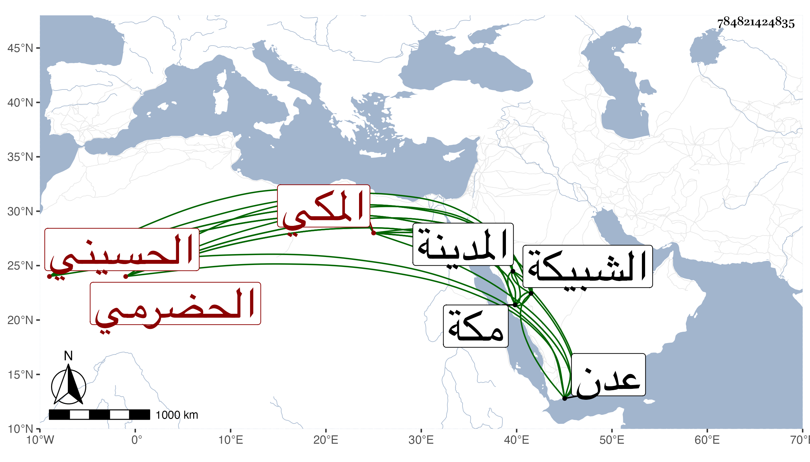

0902Sakhawi.DawLamic.ITO20230111-ara1.EIS1600.784821424835
Biography ID: 784821424835
220
عبد الله بن محمد بن علي بن محمد بن أحمد بن محمد بن علي بن محمد بن علي بن علوي بن محمد بن علوي بن عبيد الله بن أحمد بن عيسى بن محمد بن علي بن جعفر الصادق بن محمد الباقر بن زين العابدين علي بن الحسين بن علي ابن أبي طالب الحسيني الحضرمي ثم المكي نزيل الشبيكة منها ويعرف بالشريف باعلوى قال أنه رحل في الطلب فقرأ التنبيه والمنهاج والحاوي وكان يحفظه بخصوصه وغيرها ، واشتغل في الفقه والنحو والصرف والحديث ببلده وبالشحر وكتب بأسئلة إلى ابن كبن قاضي عدن فأجابه عنها ثم اجتمع به في بلده وهو متوجه للحج وبعد انقضاء غرضه من الرحلة عاد إلى وطنه وقد مات من به من العلماء فتصدى للأشغال ، وكان يميل إلى الانقطاع والخلوة والنظر في كلام الصوفية ، ثم توجه للحج في سنة إحدى وعشرين بعد رؤيته النبي صلى الله عليه وسلم في المنام وحج وجاور ثم زار في التي تليها ورجع إلى مكة ثم زار في سنة ست وأربعين فرأى النبي صلى الله عليه وسلم أيضا وهو بالمدينة ثم عاد إلى مكة وسكنها حتى مات لم يخرج منها إلا للزيارة ، وكان يحفظ القرآن جيدا ويقوم به في الليل مع تدبر وتخشع وأكثر الطواف والسكون بحيث تزايد اعتقاد الناس فيه وكثر الثناء عليه ثم تعلل بوجع في رجليه إلى أن مات في ربيع الثاني سنة ست وثمانين ودفن بالشبيكة في تربة صهره العراقي رحمه الله وإيانا .
